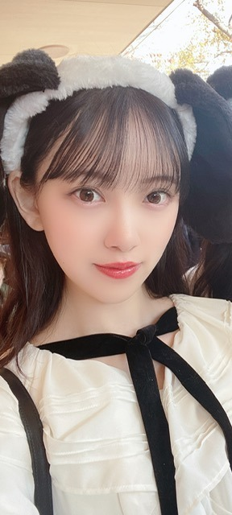

2019/1208Sun黒髪気分
黒髪にしましたー！
いつぶりやろ(^-^)？♪

明髪も個人的には好きだけど
たまに黒髪にすると落ち着きます。
どうですか？？？




写真たくさん♪♪
大阪行く度に大阪住みたいなーって思う。
食べ物美味しくて服安くて良き！
今日は23:00〜Abema TV
#乃木坂世界旅 のいいとこどり30分SPです！！
本編は14.15日ですが 今日のもみてね✨
きっと日奈子もわたしもリアタイ。笑
#堀北コンビ
ではでは。
2019/12/08 20:45
コメント(397)
良きです。とっても、とっても良きです。
黒髪、素敵っす！ やっぱ！似合うわぁ～
好きです。ほんとに、ほんとに好きです。
犬耳？とっても良きです。かわいい～です。
こぼれる前歯ちらり、かわいいなぁ～
～ん、目線の先は何見てる？
今回の口紅の発色が良いね。素敵だよ。
それと今回の写真、全部好き！...いつもだけど（笑）
お隣の犬耳さん？...お揃いかな？
大阪良いでしょ～（笑） メッチャおもろいで！
でも神戸の方がもっと良くなかった？
その先にもいい島があるんだよ～
インスタもフォローしております。
楽しみが2倍！2倍ですよ！
今野さん...見れないのが残念。
堀北の会話、面白そうでたまらんですが...
ほな、バイチャ！（さて何のセリフでしょう？）
黒髪、素敵っす！ やっぱ！似合うわぁ～
好きです。ほんとに、ほんとに好きです。
犬耳？とっても良きです。かわいい～です。
こぼれる前歯ちらり、かわいいなぁ～
～ん、目線の先は何見てる？
今回の口紅の発色が良いね。素敵だよ。
それと今回の写真、全部好き！...いつもだけど（笑）
お隣の犬耳さん？...お揃いかな？
大阪良いでしょ～（笑） メッチャおもろいで！
でも神戸の方がもっと良くなかった？
その先にもいい島があるんだよ～
インスタもフォローしております。
楽しみが2倍！2倍ですよ！
今野さん...見れないのが残念。
堀北の会話、面白そうでたまらんですが...
ほな、バイチャ！（さて何のセリフでしょう？）
ほんまかいな？大阪好きなんか？
まじでうれしい。
これからも元気で頑張っていこや！
神戸にもきてな！
まじでうれしい。
これからも元気で頑張っていこや！
神戸にもきてな！
お疲れ様です、堀さん！
黒髪の堀さん、個人的には好みです
大阪に住みたくなる気持ち、わかります。
僕も大阪に行ったら、しばらく帰りたくないですね(笑)
それと、この前の乃木坂工事中のキャプテン就任企画観ました！
クイズに間違えて粉にまみれたキャプテンにコメントを求められて、そういうメイクは最近の流行りとは違うと淡々と話す堀さんおもしろかったです(笑)
それでは、健康には気を付けてお過ごしください！
黒髪の堀さん、個人的には好みです
大阪に住みたくなる気持ち、わかります。
僕も大阪に行ったら、しばらく帰りたくないですね(笑)
それと、この前の乃木坂工事中のキャプテン就任企画観ました！
クイズに間違えて粉にまみれたキャプテンにコメントを求められて、そういうメイクは最近の流行りとは違うと淡々と話す堀さんおもしろかったです(笑)
それでは、健康には気を付けてお過ごしください！
ブログ更新ありがとう☆〃明るい髪色も結構好きだけど黒髪も良いね☆〃写真いっぱいは嬉しい(*^-^*)やっぱり未央奈可愛すぎ☆これからもずっと応援してますﾟ.+:｡∩(・ω・)∩ﾟ.+:｡
ブ～ン、飛んできましたぁ。
今ねぇ、『工事中！』見ながら
ブログ投稿してますよぉ。
ひなちまの親知らずの話してるよ。
オシャレ番長さん(未央奈)の
話が出てくるのを楽しみに待ってます。♥
(^^)/
今ねぇ、『工事中！』見ながら
ブログ投稿してますよぉ。
ひなちまの親知らずの話してるよ。
オシャレ番長さん(未央奈)の
話が出てくるのを楽しみに待ってます。♥
(^^)/
写真ラッシュ最高です!ありがとう。
かわいい!!!!
かわいい!!!!
堀未央奈様。
お疲れ様でございます。
黒髪いいですね‼️
日本人には、似合います。
いろいろなことに、挑戦すること
貴女らしく思います。
自分を信じて、これまでの様に進んで
下さい。
応援しています。
頑張って下さい。
お疲れ様でございます。
黒髪いいですね‼️
日本人には、似合います。
いろいろなことに、挑戦すること
貴女らしく思います。
自分を信じて、これまでの様に進んで
下さい。
応援しています。
頑張って下さい。
ブログ更新ありがとうございます。
個人的には黒髪の方が好きですね。
おじさんだからかな〜笑
写真の前髪きれいに揃ってるし、相変わらずメイクばっちりだしね。
黒髪の方が顔も綺麗に見えます。
ずっと黒髪でいてくれる事を希望します。
寒くなってきたので体調に気を付けてお仕事頑張ってくださいね。
またコメントします。
0606より
個人的には黒髪の方が好きですね。
おじさんだからかな〜笑
写真の前髪きれいに揃ってるし、相変わらずメイクばっちりだしね。
黒髪の方が顔も綺麗に見えます。
ずっと黒髪でいてくれる事を希望します。
寒くなってきたので体調に気を付けてお仕事頑張ってくださいね。
またコメントします。
0606より
ユニバ来てたんやね～(＾ω＾)
スヌーピーのカチューシャ可愛い❤
黒髪も似合うよ～(*^^*)
ボブみおなちゃんが1番好きです✨
スヌーピーのカチューシャ可愛い❤
黒髪も似合うよ～(*^^*)
ボブみおなちゃんが1番好きです✨
初コメントです！！！
未央奈さん黒髪可愛いくてとてもお似合いです！
いつも応援してます！！
未央奈さん黒髪可愛いくてとてもお似合いです！
いつも応援してます！！
みおな、こんばんは。
久しぶりのコメかな。
黒髪かあ。何かデビュー当時を思い出すなあ。
初選抜、初センターの発表時のきょとんとした表情は今でも覚えていますね。
あれから何年？立派になって、僕は嬉しいよ。
久しぶりのコメかな。
黒髪かあ。何かデビュー当時を思い出すなあ。
初選抜、初センターの発表時のきょとんとした表情は今でも覚えていますね。
あれから何年？立派になって、僕は嬉しいよ。
未央奈の黒髪似合ってるよ⤴️！
かわいい(*^O^*)
かわいい(*^O^*)
未央奈ちゃんブログ更新ありがとう！
未央奈ちゃん黒髪めっちゃ似合っていて、可愛いよー！
乃木坂世界旅絶対見るよ！
来週土曜日の名古屋の全国握手会行くから、僕の名前覚えていてね！
未央奈ちゃんと握手できたらいいなと思います！
これからも頑張ってね！
応援してるよ！
未央奈ちゃん黒髪めっちゃ似合っていて、可愛いよー！
乃木坂世界旅絶対見るよ！
来週土曜日の名古屋の全国握手会行くから、僕の名前覚えていてね！
未央奈ちゃんと握手できたらいいなと思います！
これからも頑張ってね！
応援してるよ！
黒髪 最高です
大阪に住みたいですか？
大阪に住んでいる私は･･････！！
私は岐阜に住みたいですね
特に岐阜の関市が好きです❗
My Romance
大阪に住みたいですか？
大阪に住んでいる私は･･････！！
私は岐阜に住みたいですね
特に岐阜の関市が好きです❗
My Romance
堀さん、こんばんは。
久しぶりの黒髪にしてみていかがですか？
乃木坂46メンバーは明るい髪色でもすてきですけれど、やはり黒髪は「清楚」「上品」といった乃木坂46らしさを表している髪の色だと思うので大歓迎です。
AbemaTVさんでは堀さん北野さんの二人旅の模様を放送していただいて嬉しいかぎり。来週の土日が本編ですが、それに先立ち今日は「いいとこどり30分」SP。南の島での気ままな旅の模様、楽しく観させていただきます。
ではまたコメント寄せますね。おやすみなさい。
さらばだ、また会おう！（気球に乗って去りぬ〜）
久しぶりの黒髪にしてみていかがですか？
乃木坂46メンバーは明るい髪色でもすてきですけれど、やはり黒髪は「清楚」「上品」といった乃木坂46らしさを表している髪の色だと思うので大歓迎です。
AbemaTVさんでは堀さん北野さんの二人旅の模様を放送していただいて嬉しいかぎり。来週の土日が本編ですが、それに先立ち今日は「いいとこどり30分」SP。南の島での気ままな旅の模様、楽しく観させていただきます。
ではまたコメント寄せますね。おやすみなさい。
さらばだ、また会おう！（気球に乗って去りぬ〜）
スヌーピーの耳の方が気になります。黒髪もいい感じですね、
えらいべっぴんさんで。
えらいべっぴんさんで。
ほりっぴ～、ナンチです♪
ブログ更新ありがとう～
世界旅
いいとこ取りSP見たよ
本編が楽しみすぎる
黒髪のほりっぴ～
めっちゃ好き
ブログ更新ありがとう～
世界旅
いいとこ取りSP見たよ
本編が楽しみすぎる
黒髪のほりっぴ～
めっちゃ好き
ブログ更新ありがとう！
黒髪も最高です。
乃木坂世界旅楽しみです。
乃木坂世界旅の現地の話を教えて下さい。
ブログ更新待ってます。
黒髪も最高です。
乃木坂世界旅楽しみです。
乃木坂世界旅の現地の話を教えて下さい。
ブログ更新待ってます。
お！ここですか！
黒髪未央奈ちゃんが見られる場所は！
ええ！とっても似合いますとも♡
未央奈お嬢様とお呼びしても差し支えないかと
未央奈ちゃんの気分か変わるまで
黒髪未央奈ちゃんを楽しもうと思います♡
黒髪未央奈ちゃんが見られる場所は！
ええ！とっても似合いますとも♡
未央奈お嬢様とお呼びしても差し支えないかと
未央奈ちゃんの気分か変わるまで
黒髪未央奈ちゃんを楽しもうと思います♡
未央奈ちゃん、こんばんは(^o^)/
黒髪も明るい色もどっちも似合いますね( ＾∀＾)
個人的には栗色っていうのかな？が好きです( ＾∀＾)
黒髪も明るい色もどっちも似合いますね( ＾∀＾)
個人的には栗色っていうのかな？が好きです( ＾∀＾)
やほー。
黒髪素敵だね。
白いお肌とのコントラストが際立って、綺麗さが際立つね。
大好きやお。
本当に綺麗だなぁ。良き良き。
ではは。
黒髪素敵だね。
白いお肌とのコントラストが際立って、綺麗さが際立つね。
大好きやお。
本当に綺麗だなぁ。良き良き。
ではは。
明髪も良かったけど、
やっぱ、黒髪も好きです
( ≧∀≦)ノ
やっぱ、黒髪も好きです
( ≧∀≦)ノ
未央奈～☆☆
黒髪の未央奈、久しぶりだな～
黒髪って、未央奈の原点って感じがして
なんかホッとする。
明髪の綺麗でキラキラした感じも好きだし
髪色だけでも未央奈の違った魅力を
こんなにも感じることができて嬉しいな～
乃木坂世界旅のいいとこどり、
いやー、未央奈のテンションの高さに
笑顔が止まらなかった。笑
そして、本音の話もあり、締まるところは締まって、
中身がギューッと詰まった未央奈にとって
本当に充実したいい旅だったんだろうなー
本編も楽しみにしてるね！
黒髪の未央奈、久しぶりだな～
黒髪って、未央奈の原点って感じがして
なんかホッとする。
明髪の綺麗でキラキラした感じも好きだし
髪色だけでも未央奈の違った魅力を
こんなにも感じることができて嬉しいな～
乃木坂世界旅のいいとこどり、
いやー、未央奈のテンションの高さに
笑顔が止まらなかった。笑
そして、本音の話もあり、締まるところは締まって、
中身がギューッと詰まった未央奈にとって
本当に充実したいい旅だったんだろうなー
本編も楽しみにしてるね！
みおなちゃんへ
これからも頑張って！
応援しています、
マウスのＣＭ可愛いね
大好き
またね✋
これからも頑張って！
応援しています、
マウスのＣＭ可愛いね
大好き
またね✋
やっぱ堀ちゃんは顔立ちが端正というかシｭｯトしてるからシンプルな黒髪が一番似合う！
夏はショートにしてほしいかも
夏はショートにしてほしいかも
なんだかんだ結局、黒髪が好き。
似合う♪
似合う♪
こんばんは。ブログ更新ありがとうございます。
黒髪、可愛いですね！！とても似合ってると思います。髪の長さもちょうど良い感じで、可愛い写真いっぱいあざーす！！透明感って言葉がぴったりですね。
師走になって、年末も忙しくなってきますが、次のシングルはバースデーライブの後になるのかな？次のセンターには、星野みなみちゃんとか、まだセンターになっていないメンバーの他、いくちゃんや未央奈ちゃんのような再センターもありだと思います。こうやって見ると、乃木坂46は人材が豊富ですね。
ではまた。
黒髪、可愛いですね！！とても似合ってると思います。髪の長さもちょうど良い感じで、可愛い写真いっぱいあざーす！！透明感って言葉がぴったりですね。
師走になって、年末も忙しくなってきますが、次のシングルはバースデーライブの後になるのかな？次のセンターには、星野みなみちゃんとか、まだセンターになっていないメンバーの他、いくちゃんや未央奈ちゃんのような再センターもありだと思います。こうやって見ると、乃木坂46は人材が豊富ですね。
ではまた。
堀ちゃんこんばんは！
黒髪の堀ちゃん！やったー！！( ´ ▽ ` )
やっぱりめっちゃ可愛いです！黒髪の堀ちゃんも大好きです！！(o^^o)
なんて言ったらいいのかな、黒髪の堀ちゃんはホッと落ち着く可愛さ、明るい髪の堀ちゃんはワーっと騒ぎたい可愛さっていう心持ちです！
簡潔に言うとどちらも大好きです( ´ ▽ ` )♩
黒髪も可愛いですし明るい色もお似合いで可愛くて、色んな可愛い堀ちゃんを見るのが楽しいので、なんだか堀ちゃんが髪色を変えるたびに喜んでいる気がします(^^)笑
また黒髪でも色んな髪型見せてもらえると嬉しいです！(o^^o)
そして乃木坂世界旅いいとこどりも観ましたー！
えっ…30分ってこんなに短かったでしたっけ…？
もう登場からめちゃくちゃ堀ちゃん可愛かったです！
ハーフアップの堀ちゃん最高に可愛い！(o^^o)
マダムの反対って言われて困ってる顔もめちゃくちゃ可愛いかった…！
困ってるのに可愛いって言ってごめんなさい…でもめっちゃ可愛いです…
シャチで登場は1人で声出して笑いました！笑
堀ちゃんはいたって真剣な顔をしているのがまた味のあるワンシーンでした〜、最高です！！！
一つ一つのシーンの感想を届けたいぐらい30分でも見どころ満載でした！
来週が待ちきれないー！めっちゃ楽しみです！(o^^o)
ちなみに私ごとなんですが先日まで仕事で中国に行ってまして、そこで感じたことなんですが…
中国の扉って「押」が「推」って表記されてまして
それを見るたび堀ちゃんを思い出して勝手に癒されてました、僕の推し( ´ ▽ ` )♩笑
なんてことないエピソードトークを勝手にしてしまってすみません、堀ちゃんに言いたくなってしまったので笑
鼻風邪大丈夫でしょうか？お忙しいので中々ゆっくり休めないかもしれませんが、あったかくして過ごしてくださいね(>_<)
仙骨っていう腰の辺りを温めると循環が良くなって全身温まりやすいみたいです、よかったらカイロとかでやってみてください！
早く良くなりますように、堀ちゃんが楽しく年の瀬を過ごせますように…！
ではでは！またコメントさせてくださいー！
黒髪の堀ちゃん！やったー！！( ´ ▽ ` )
やっぱりめっちゃ可愛いです！黒髪の堀ちゃんも大好きです！！(o^^o)
なんて言ったらいいのかな、黒髪の堀ちゃんはホッと落ち着く可愛さ、明るい髪の堀ちゃんはワーっと騒ぎたい可愛さっていう心持ちです！
簡潔に言うとどちらも大好きです( ´ ▽ ` )♩
黒髪も可愛いですし明るい色もお似合いで可愛くて、色んな可愛い堀ちゃんを見るのが楽しいので、なんだか堀ちゃんが髪色を変えるたびに喜んでいる気がします(^^)笑
また黒髪でも色んな髪型見せてもらえると嬉しいです！(o^^o)
そして乃木坂世界旅いいとこどりも観ましたー！
えっ…30分ってこんなに短かったでしたっけ…？
もう登場からめちゃくちゃ堀ちゃん可愛かったです！
ハーフアップの堀ちゃん最高に可愛い！(o^^o)
マダムの反対って言われて困ってる顔もめちゃくちゃ可愛いかった…！
困ってるのに可愛いって言ってごめんなさい…でもめっちゃ可愛いです…
シャチで登場は1人で声出して笑いました！笑
堀ちゃんはいたって真剣な顔をしているのがまた味のあるワンシーンでした〜、最高です！！！
一つ一つのシーンの感想を届けたいぐらい30分でも見どころ満載でした！
来週が待ちきれないー！めっちゃ楽しみです！(o^^o)
ちなみに私ごとなんですが先日まで仕事で中国に行ってまして、そこで感じたことなんですが…
中国の扉って「押」が「推」って表記されてまして
それを見るたび堀ちゃんを思い出して勝手に癒されてました、僕の推し( ´ ▽ ` )♩笑
なんてことないエピソードトークを勝手にしてしまってすみません、堀ちゃんに言いたくなってしまったので笑
鼻風邪大丈夫でしょうか？お忙しいので中々ゆっくり休めないかもしれませんが、あったかくして過ごしてくださいね(>_<)
仙骨っていう腰の辺りを温めると循環が良くなって全身温まりやすいみたいです、よかったらカイロとかでやってみてください！
早く良くなりますように、堀ちゃんが楽しく年の瀬を過ごせますように…！
ではでは！またコメントさせてくださいー！
黒髪もやっぱり似合ってます！
#乃木坂世界旅、本編の方も楽しみにしてます！
#乃木坂世界旅、本編の方も楽しみにしてます！
ブログもモバメもありがとー（＾ω＾）
黒髪凄い似合ってる！！FNSの時の髪色もめちゃくちゃ似合ってたし、素敵やね(*´꒳`*)
大阪へいらっしゃい！！
大阪は素敵！！俺は東京に憧れてるけど！笑
乃木坂世界旅、本編がますます楽しみになりました！！
ほな、お休みー（＾ω＾）
黒髪凄い似合ってる！！FNSの時の髪色もめちゃくちゃ似合ってたし、素敵やね(*´꒳`*)
大阪へいらっしゃい！！
大阪は素敵！！俺は東京に憧れてるけど！笑
乃木坂世界旅、本編がますます楽しみになりました！！
ほな、お休みー（＾ω＾）
明髪の堀ちゃんもすごく可愛いけど、黒髪堀ちゃんも超絶可愛い!!!(*´-`) ちなみに、しいてどちらかを選ぶなら...。個人的には、黒髪堀ちゃんが最も好き(〃∇〃) 14、15日の世界旅本編も楽しみにしてるよぉ♪♪
落ち着いた感じで、凄く良いですね！
堀ちゃん
お疲れ様です。
黒髪、めっちゃ好きです。
あと、きいちゃんと一緒の時に
出るお姉さんぽい所
凄い好きです。(///ω///)♪
お疲れ様です。
黒髪、めっちゃ好きです。
あと、きいちゃんと一緒の時に
出るお姉さんぽい所
凄い好きです。(///ω///)♪
美白の映える黒髪が未央奈さんには最高に似合ってます！
堀さん、こんばんは。
髪黒くしたんですね。写真では服のリボンや犬の耳に合ってて、とてもお似合いです。
昔学生時代に授業で読んだ陰翳礼讃に暗い髪は顔の白さを引き立たせるみたいな話が有ったのを思い出しました。
乃木坂世界旅のいいとこどり見ました。街並みも海も綺麗でしたね。リアルマダムやカメや馬や魚と、色んな出会いが有ったみたいですね。
よくレコメンでのりさんが堀さんを天使呼ばわりするのをやってますけど、本当に堀さんは一番近いどころか天使そのものですね。堀さんが四六時中可愛い事実に度肝を抜かれました。
天然のプールで顔付けた後に水吐けなくて飲んじゃう所は、余りにも可愛すぎていい加減にしてくれって思いました。カメラ前で水を吐くなんてできないっていう意志が有ったのだと僕は勝手に思ってます。
本編も絶対に見ますね。
鼻風邪治るように祈ってます。休む時間もなんとか取りつつ頑張ってくださいね。
髪黒くしたんですね。写真では服のリボンや犬の耳に合ってて、とてもお似合いです。
昔学生時代に授業で読んだ陰翳礼讃に暗い髪は顔の白さを引き立たせるみたいな話が有ったのを思い出しました。
乃木坂世界旅のいいとこどり見ました。街並みも海も綺麗でしたね。リアルマダムやカメや馬や魚と、色んな出会いが有ったみたいですね。
よくレコメンでのりさんが堀さんを天使呼ばわりするのをやってますけど、本当に堀さんは一番近いどころか天使そのものですね。堀さんが四六時中可愛い事実に度肝を抜かれました。
天然のプールで顔付けた後に水吐けなくて飲んじゃう所は、余りにも可愛すぎていい加減にしてくれって思いました。カメラ前で水を吐くなんてできないっていう意志が有ったのだと僕は勝手に思ってます。
本編も絶対に見ますね。
鼻風邪治るように祈ってます。休む時間もなんとか取りつつ頑張ってくださいね。
未央奈さんこんばんは♪
黒髪可愛いよ(〃^ー^〃)
似合う！
たくさん写真もありがとう♪
大阪良いところだよね
俺も愛知県出身ですが、幼少期は大阪に居たので第２の故郷だよd(⌒ー⌒)!
また行きたいなあ
乃木坂世界旅もチェックするね♪
明日もHAPPYを
お休みなさい(^-^ゞ
黒髪可愛いよ(〃^ー^〃)
似合う！
たくさん写真もありがとう♪
大阪良いところだよね
俺も愛知県出身ですが、幼少期は大阪に居たので第２の故郷だよd(⌒ー⌒)!
また行きたいなあ
乃木坂世界旅もチェックするね♪
明日もHAPPYを
お休みなさい(^-^ゞ
黒髪堀ちゃんめっちゃ(・∇・*)ｶﾜｲｲﾅｧ-
(*´˘`*)だーい好き❣❣
(*´˘`*)だーい好き❣❣
もう一生黒髪でいてほしい！てくらい堀ちゃん黒髪推しです！
とかいいつつ茶髪もかわいいけど笑
清楚で色白が際立ってて似合ってる！
大阪人としてはその言葉うれしい〜
また来てね〜
いっぱいええもん食べて帰るんやで〜
とかいいつつ茶髪もかわいいけど笑
清楚で色白が際立ってて似合ってる！
大阪人としてはその言葉うれしい〜
また来てね〜
いっぱいええもん食べて帰るんやで〜
乃木坂世界旅から乃木中までリアルタイムで視聴しました。堀さんとても楽しそうで、見ているこちらも楽しい気分になれました。
2期愛を感じるコメントが多く、2人が2期代表みたいでした。
本編が楽しみ！
本編、堀さんリアタイなら、本人だとわかるようにコメント入れられませんか？ブログでクイズ出して、何時何分に答えをコメントで発表すると告知する、とか。
2期愛を感じるコメントが多く、2人が2期代表みたいでした。
本編が楽しみ！
本編、堀さんリアタイなら、本人だとわかるようにコメント入れられませんか？ブログでクイズ出して、何時何分に答えをコメントで発表すると告知する、とか。
黒髪・・・・美人すぎる。。
みどり‐の‐くろかみ【緑の黒髪】 かーー (^_-)-☆
※黒くつやのある女性の美しい髪。
元気で 今年一杯 駆抜けよう！！ (^_^)v
※黒くつやのある女性の美しい髪。
元気で 今年一杯 駆抜けよう！！ (^_^)v
やっぱり黒髪が似合うと思います(他の色も悪くない)。
ついでにショート希望です(笑)！
ついでにショート希望です(笑)！
未央奈さん
こんにちは｡世界旅ニューカレドニア堀北コンビのいいとこ取り３０分SPを観ました｡綺麗な島と海を案内していただきありがとうございました｡海に入る時のウエットスーツではない水着がカラフルでいいですね｡同期生コンビがはしゃぐ姿に癒やされました｡後日の本編も観ます｡そして最終日の本音トークを聞きます｡未央奈さんが涙目で語るのは･･･｡ 応援しています｡ ブログ写真の前髪サラサラの黒髪ポニテはすごく綺麗です｡ では またね｡
黒猫ジジ
こんにちは｡世界旅ニューカレドニア堀北コンビのいいとこ取り３０分SPを観ました｡綺麗な島と海を案内していただきありがとうございました｡海に入る時のウエットスーツではない水着がカラフルでいいですね｡同期生コンビがはしゃぐ姿に癒やされました｡後日の本編も観ます｡そして最終日の本音トークを聞きます｡未央奈さんが涙目で語るのは･･･｡ 応援しています｡ ブログ写真の前髪サラサラの黒髪ポニテはすごく綺麗です｡ では またね｡
黒猫ジジ
乃木坂大好きノホリン(*_*)です。
堀ちゃんの髪型で好きなのは、黒髪で肩にかからないぐらいの長さです(*_*)
堀ちゃんの髪型で好きなのは、黒髪で肩にかからないぐらいの長さです(*_*)
ブログ更新ありがとう。
黒髪似合ってますよ。
ますます綺麗だなぁっておもいます。
応援してます。
寒いので気を付けて頑張って下さい。
黒髪似合ってますよ。
ますます綺麗だなぁっておもいます。
応援してます。
寒いので気を付けて頑張って下さい。
ほっしゃん。おはよー 可愛い❗〜から綺麗に((o(^∇^)o))成長株♪ヽ(´▽｀)/
黒髪の方が乃木坂46らしくて好きです。
そして、黒髪良く似合ってる！
そして、黒髪良く似合ってる！
いいな〜USJ楽しそう！行きたい！
でもどうせなら未央奈と同じ日に行きたい
茶髪も可愛いけど黒髪も似合うね！！可愛い
でもどうせなら未央奈と同じ日に行きたい
茶髪も可愛いけど黒髪も似合うね！！可愛い
ブログ更新ありがとう！
写真たくさんあって嬉しい！
やっぱり黒髪も可愛いです！
今週も頑張ろう！！
写真たくさんあって嬉しい！
やっぱり黒髪も可愛いです！
今週も頑張ろう！！


明るい髪色も好きだったけど
黒髪も安定に最高！
カチューシャおにあいです〜♥
本編楽しみ！